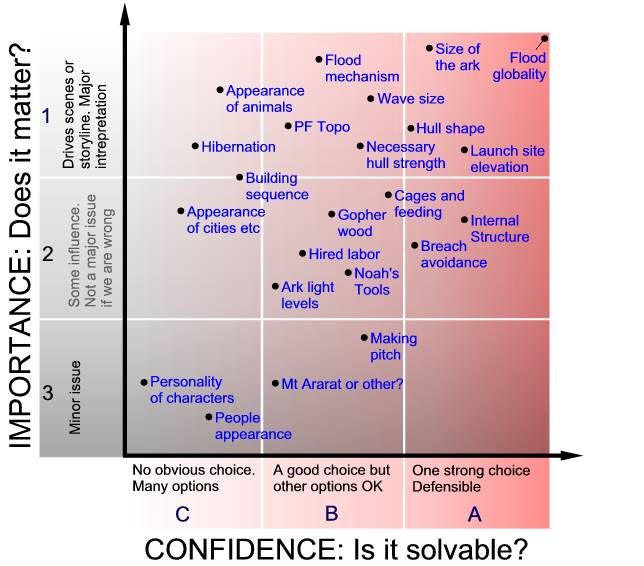

COPYRIGHT Tim Lovett © 2004
.
.
.
There are many questions relating to
Noah's Ark. From the simple length of the cubit to the complexities of
geological flood mechanisms. The following diagram illustrates how these might
be arranged in some sort of order. The issues are given approximate ranking in
both importance and confidence. For example, the "globality of the
flood" is the over-riding theme so it gets maximum importance, but it is
also Biblically inescapable so it also gets the highest level of confidence,
making it an A1 issue.
Here is an example of how the issues might be categorized. Positioning is rather objective, especially along the relative importance axis. It is more realistic to resolve into only 3 levels. Clearly the best issues to address are at A1, then A2 and B1, followed by B2. Issues in the C column might be troublesome, and ones in row 3 relatively trivial . An issue at C3 has the lowest priority.

Questions about Noah’s Ark and the Flood
(Tim Lovett / SM May 26 2004)
100. Ark Structure and Design
1. How long was the cubit? (A2)
2. What is gopher wood? (B2)
3. What was the shape of the Ark (general hull form parameters) What form were
the ends (Bow & stern pointed, rounded, semi-rounded, or blunt)? (A1)
4. What did the roof look like (celestial window roof span, timber thickness,
roof slope)? (B2)
5. What did the Ark’s (lighting) window G6:16 look like? Where was it (Also
water deflecting sill height, hatch options)? (B2)
6. Was the Ark made entirely of wood, or was metal used in the construction of
the Ark? (B2)
7. What did the inside supports look like (timber sizes, appearance, joint
detailing)? (A2)
8. What was the interior structure (spaceframe, bulkheads, supports
etc)? (A2)
9. How was the inside fitted to account for rolling (i.e. lamp fixtures, door
handles, non-slip floors, hand rails, etc)? (B2)
10. What types of tools/equipment were on the Ark (pumps, winches,
ventilation, lighting (lower levels))? (B2)
11. How much space between decks? (A2)
12. What was the ‘pitch’? What did it look like? (A2)
13. Define the door - size, location, hinging, seal (which deck and
longitudinal position) (B2)
14. A special window? Gen 8:6 - location, size (B3)
15. Safety in design - watertight compartments, fire safety, moisture and
health issues? (B2)
16. Maintaining course into the wind – (sea anchor, wind steered stern etc)?
(A2)
200. Interior Layout and Services
1. How much usable space was inside the Ark (what was the inside volume of the
Ark after considering the space taken up by structural supports, etc.)?
2. How much space did the animals occupy?
3. How much space did living quarters occupy?
4. How were the decks arranged? (Floor plan)
5. How/where were the animals exercised?
6. What did the pens/cages look like?
7. What did the ventilation system look like?
8. How was food stored?
9. How was water stored? Rainwater collection?
10. What was the light level - esp lowest deck?
11. How did they get from deck to deck (floor-to-floor ramp slope and
location)?
300. Ark Construction and Site
1. General terrain - high / med / low, wooded, gradients?
2. Degree of isolation / proximity to cities etc,
3. Transport - roads, river etc
4. Construction buildings, equipment req'd
5. How was the Ark built— prefab/onsite ratio, purchasing/onsite labor
ratio, family/employees work ratio?
6. How long did it take Noah to build the Ark?
7. How was the Ark built—from the bottom up?
8. Where was the Ark launched?
9. What did the construction site look like?
10. What did Noah’s ‘workshop’ look like (sawmill?)? Types of tools he
used? Ovens to fire clay, metal furnaces?
11. What was the general appearance of the pre-flood world - sun, sky, plants,
animals, buildings, people, humidity, etc?
12. Preflood water cycle - mists, rain, subterrainean waters?
13. Defining people - Clothing and temperature/humidity, diet, longevity (was
Noah unique in his day)?
400. Animal issues
1. Did Noah have a ‘zoo,’ where he kept/bred animals during Ark
construction?
2. Which animals did Noah use to help build the Ark?
3. How many animals were on the Ark?
4. Which animals were used to help with chores on the Ark?
5. What was the average size of all the animals on the Ark?
6. How were the animals fed?
7. How were the animals watered?
8. How was waste collected and disposed of?
9. What did the animals look like?
10. Was there any hibernation, or similar effects due to darkness and motion?
11. Likely deathrate/birthrate, any animals made extinct on board?
12. What limits on the animal kingdom? (Insects excluded - Woodmorappe?)
13. Two’s and sevens – animals, birds. Gen 7:2,3
500. The Flood
1. How bad were the waves (Wave height, slope etc)?
2. Driving mechanism - CPT or other?
3. Flood initiation - visible event. Daytime or middle of the night?
4. Flood prewarnings - how much time?
5. Earthquakes, wind etc or quietly?
6. Inundation rate / approx numbers for flow speed, wave sizes etc?
7. Amount and type of volcanic activity?
8. Limits or clues on geyser proximity and scale relative to ark ?
9. What was rain intensity - esp regarding visibility?
10. Launch – current limit, special requirements, temporary anchorage?
11. Define flood level vs time during flood
12. Intensity of the drying wind and generated waves?
13. Effect of floating vegetation – (wave reduction etc Woodmorappe)
14. Beaching conditions – ground bearing properties, waves, gradient?
600. Special
1. How did Noah preach righteousness?
2. How did God instruct Noah?
3. God closing the door – public or not / the scene?
4. Ante-diluvian’s interest / attitude / antagonism?
5. Technology hints from early civilisations?
6. Doomed workforce issue / reliability of labor?
7. Issues over landing site - Mt Ararat vs Zagros etc?
8. Modern ‘eyewitness account’ details – Ed Davis etc. E.g. leather
drinking troughs, upper level living quarters etc
GENERAL ISSUES THAT MIGHT AFFECT THE ARK STRUCTURE AND DESIGN
(An unstructured list of points)
No weight limit: The average density of ark contents is low, animals and compressed food is still well below the density of water. Even the hull material is comparatively lightweight (wood). So if it doesn't waste space, a timber beam would not need to be trimmed down to save weight.
No wood limit: The fossil record indicates lush plant growth prior to the flood. Petrified tree trunks indicate massive trees buried in debri. The ark would require thousands of tons of wood. It seems reasonable to assume an almost unlimited supply of high quality timber in long lengths were available to Noah.
Space is a premium. Not much room to spare once the animals are housed, year long full food supply included, access and services are added and provision made for excesses such as water, generous living quarters etc.
Timber processing: This may have been a limiting factor. There are few clues to the exact nature of Noah's timber processing technology, whether chipping, splitting or sawing, and to what extent labor saving methods were employed. While a large amount of processing is mandatory for the construction of an integrated, seaworthy hull, the larger structural timbers might feasibly be left in the natural round condition over most of their length apart from joint detailing. Processing limitations may have a bearing on how extensively milled timbers could be employed in decking, cages, walls and general carpentry.
Novel Construction Methods: The timescale of the ark construction might provide the opportunity to employ novel methods such as growing trees together to form special shapes, or embedding timber or objects into a growing tree-trunk to form reinforced joints. (Discussion with LL Studios 2002)
Long Construction time. 100 to 120 years. Possibly longer than this if Methusaleh had wind of it before this time and had been preparing in some way - collecting records, building resources, selling land etc.
Materials: Bronze and Iron technology was firmly established well before Noah's time. Noah should have been wealthy and therefore capable of purchasing and organizing metal components (if not directly involved himself). Metal tools are assumed, bronze and iron. It is reasonable to expect proficiency in pottery (if you can make steel, you can easily fire clay), as well as natural fabrics (wool, cotton etc) and leatherwork.
Noah's ability: At 500 years of age, with a famous grandfather coming from the Godly Enoch, Noah had every reason to be extremely knowledgable. The combined effect of extreme health and longevity would give a sharp mind with an extensive memory and library of experience. Today, an extra 10 years of study is regarded as elite. Imagine an extra few hundred. Even if his potential had remained dormant until the ark construction began, a few years into the project would soon get him up to speed.
Ante-diluvian apathy: Direct resistance to the ark construction appears unlikely for two reasons. There is no record of attacks, and Jesus implied that they were just going about their business. In other words, they thought Noah was irrelevant.
Scale: The favorite cubit length is the 18 inch-er. It may have been as long as 21. In any case there is adequate room aboard, yet the construction is still possible using timber. Construction is more difficult using the larger cubits.
Not open plan: The specifications called for "many rooms" (which could also mean cages). Furthermore, most animals are more comfortable when not "on show". Reptile handlers in Australia recommend opaque containers rather than glass for the comfort of the animal. Another factor is the strengthening effect of bulkheads and stress resisting walls. Deck support is also constrained by a maximum length between supports. So, while panoramic images are suitable for illustration purposes, there is little opportunity for extensive vistas on board a cargo vessel - especially a timber one. Timber beams cannot span as large a distance as steel.
The ark was a short lived vessel. 5 months voyage and 1 year enclosed. The hull was coated in pitch and would have been very thick for structural reasons. Hence marine borers would not pose a threat.
The ark had to survive beaching and remain inhabitable. Note that bulk oil carriers do not like being beached. This is a significant design criteria.
The ark was most likely launched by the floodwaters. The Bible indicates the ark was lifted by the rising waters - an unlikely description if a slipway or flooded dry-dock method was employed.
The flood must have come too quickly for outsiders to attack the ark. This introduces the difficulty of ensuring a smooth and safe launch, yet getting the water there fast enough to stop the people attacking. One option might be to launch the ark close to shore, let the waters rise a little and buoy the ark before the ante-diluvian panic set in. Another method would be to have continental flow send the ark seaward (water comes from behind) to avoid collision with obstacles on the land. Launching in an incoming torrent is not a good scenario, unless the ark was temporarily anchored, in which case an overly blunt bow would not be desirable. There is much work to be done regarding the launching conditions.
There were no other human survivors. Since other people might have been capable of surviving a 5 month voyage, (and may have been out fishing at the time) the flood was too severe in terms of wave size, weather conditions or volcanic debris.
Flood mechanism: Worldwideflood favours catastrophic plate tectonics as a mechanism for the flood (Baumgardner). This model provides a mechanism for initiation, sea-level changes, accelerated tectonic activity, late flood deposits and rapid soft strata folding.
The ark construction period was long. 100 years in the open may have been more of a test than the waters of the flood. During construction the ark may have outlived most permanent structures. From the outside, the ark project would appear comical, particularly since the external "walls" of the hull would almost certainly have been completed well before the internal fit-out, probably by decades.
The pitch was inside and out. It may even have been constructed using timber than had been pre-treated with pitch. Long term construction might be one reason beside the voyage itself. The exact nature of this pitch is also up for debate - whether pure black bitumous tar, a tree based resin or some other concoction/process. This issue is important however, since this instruction is particularly noted.
A thick keel. A significant amount of longitudinal timber is desirable in the keel for structural reasons. (maximize section modulus). It might also be needed for launching, and most certainly required for a safe beaching.
A thick roof. With a thick keel and roof, as well as a shear resisting side wall, the longitudinal bending moment is maximized. A thick roof with substantial lengthwise timbers provides resistance to hogging and sagging loads. It also deflects volcanic debris.
The ark rocks: The ark dimensions point to a sea-going vessel, so there were probably waves. This means rocking and movement must be accounted for in the design of water feeding and drainage systems, food stowage, animal housing. Even small details like lamps fittings, door latches, hand rails, non slip floors must be designed to suit this environment.
Ventilation: Since open plan is unlikely, ventilation must be emphasized. Some techniques may include: Partition walls that are not lined to the ceiling, ventilated grid floor sections, deliberate air passageways following the walkway layout, air ducts.
Lighting: The ark is dark - especially on the lowest level. This, combined with the ark movement would have a quietening effect on the animals. Troublesome monkey? Right, you're off to the bottom deck!
Food storage dispersed: There are a number of reasons to distribute the food stores throughout the ark. Firstly, loads should be evenly distributed within a ship to minimize still water bending moments and reduce the concentration of structural loads. Secondly, the food would be best kept an easy distance from the housed animals, but in a controlled environment. Thirdly, the food would be stored in sacks, boxes, barrels or animal skins that can be man-handled, hence there is no advantage in a single stockpile. (Only bulk storage would make it preferable to concentrate the cargo in one area.) The food would not need to be stored as a form of ballast, nor would it leave an empty lowest deck when the food was exhausted (well, 5 months into it anyway). Finally, it is easier to manage problems such as rodents, dampness etc if the food is distributed. A preferred option would multiple sealed storage "cabins" servicing sub-sections of each deck. The food must also remain intact during rough weather.
The ark would require careful design. Gross dimensions are not enough. Noah would need to make decisions regarding timber sizes, joint detailing, hull waterproofing, enclosures, feeding systems, etc etc.
Low labour animal housing: Basic but effective ways to feed and water many caged animals can be devised - especially when used grain feeding. Water feeders based on a vacuum water lock (an upturned bottle mounted over a bowl) are very effective in reducing troublesome water feeding issues on a rocking vessel. (The water trough is out). Very easy in pottery too.
Water pipes: While metal is a possibility, the sheer scale of the project and the relatively short duration would preclude it. Obviously if pitch was used for other things, it would also be used here. Some possibilities include cored bamboo, sewn leather, animal intestines. It has to last for 1 year so any of these could work.
Water storage: Animal skins or barrels. This factor alone in a reason to consider replenishing Noah's water supply using rainwater. Thousands of tonnes of water in skins and drums is a serious undertaking. It also represents thousands of animals, something that may have required animal sacrifices perhaps. (Unless the ante-diluvians were eating meat well before God allowed it after the flood).
Roll stability not an issue. The geometry of the ark would produce a very stable vessel. Because of this, there would be no need to store all the food in the bottom. However, storing ALL the food ABOVE the cages (Woodmorappe) will be significant in reducing the righting moment. (probably still quite Ok however). The Hong study indicated an extraordinary "13 times more stable than ABS rules", so if anything, we need to reduce the stability. It's too stable for comfort.
Ingeneousity: Here, Noah has the upper hand on modern man. Fortunately we have records of the sort of things the ancients people could achieve - even with low technology. To build successful timber ship 130-150m long, Noah was no dummy. He would have no trouble solving more rudimentary issues such as unmanned water pumps, maintaining heading into the wind, collecting rainwater, food and water dispensing etc.